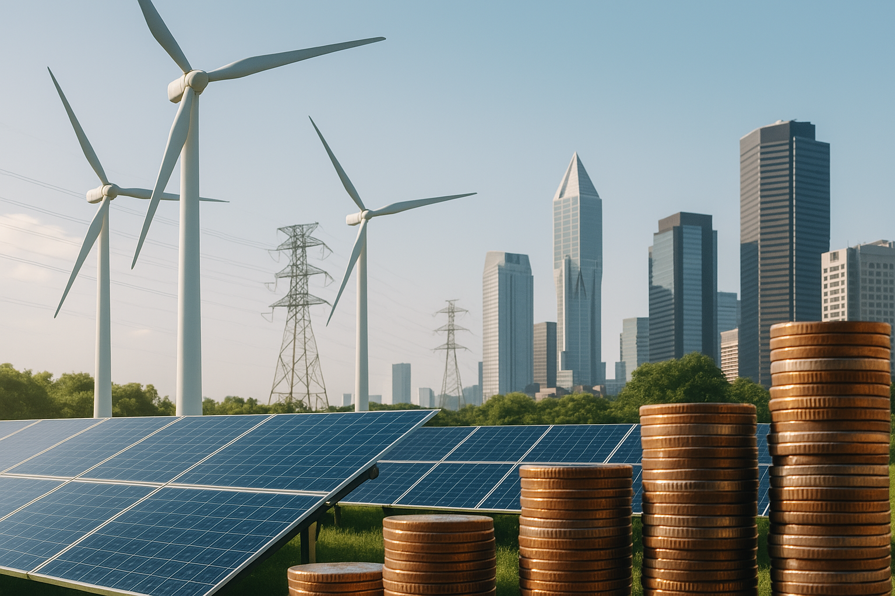
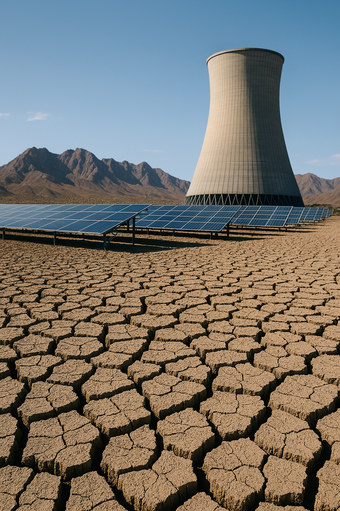

Energy Transition Policy Analysis
Exploring the intersection of policy, technology, and economics in the global shift to sustainable energy systems.

April 4, 2025
•
9 min read
Debt and the Energy Transition
How debt burdens shape the future of climate investment in emerging economies like Tunisia.
Public Finance
Energy Transition
Global South
Read more →

April 4, 2025
•
7 min read
Water Scarcity and Decarbonization
Decarbonization efforts must integrate water resilience. Here's why the Global South can’t afford to separate the two.
Water
Decarbonization
Mediterranean
Read more →
April 4, 2025
•
8 min read
Tunisia in the Mediterranean Green Hydrogen Race
Can Tunisia avoid extractivism and shape green hydrogen to serve its own development?
Hydrogen
Tunisia
Mediterranean
Read more →